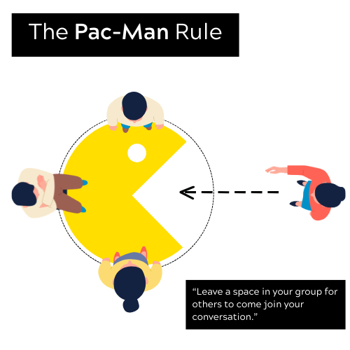
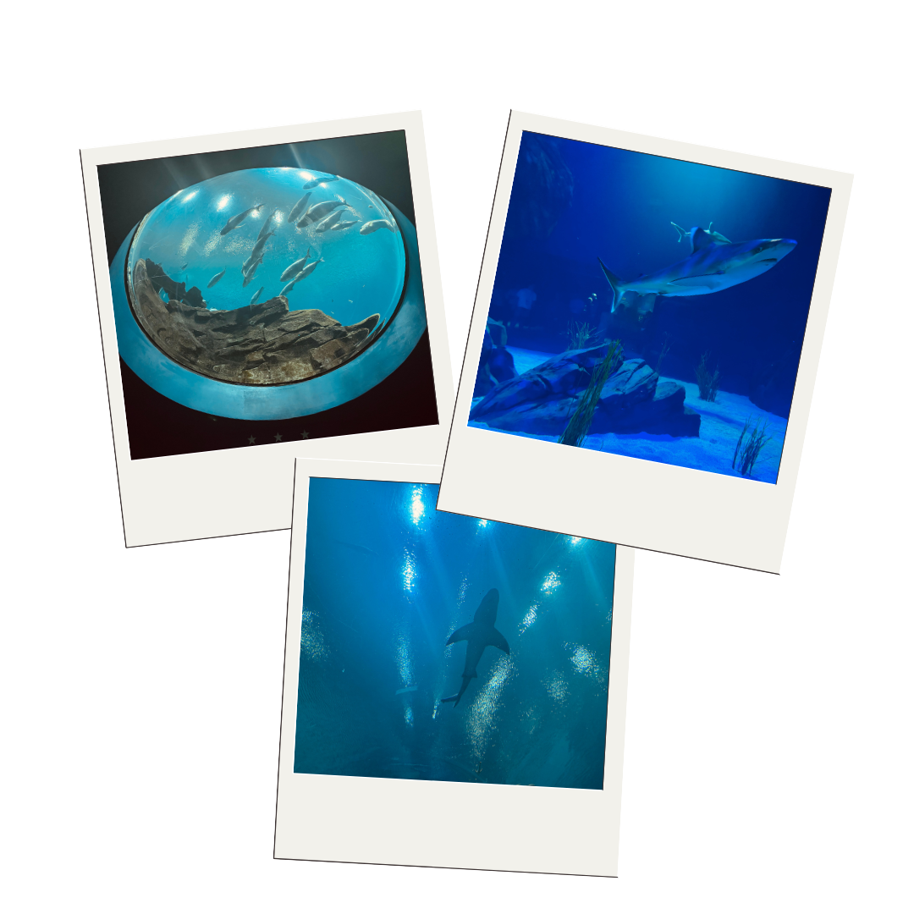
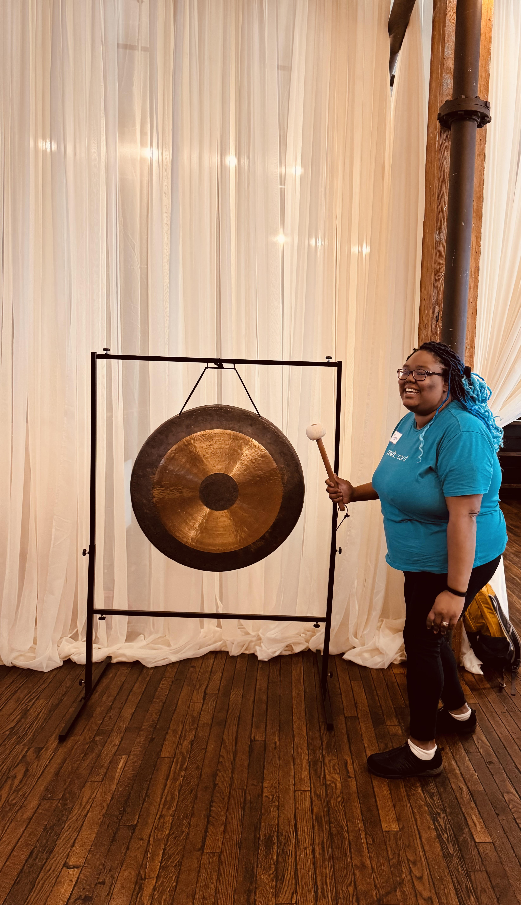

![]()
What is Vibe Conf’ing?
Before I recap my experience at posit::conf(2025), let’s talk about “vibe conf’ing” (Vibe Conf- Ing). I was first introduced to this term by Ted Laderas:

This came after I posted that I was going to posit::conf(2025) without participating in workshops, being a TA, or presenting talks. I couldn’t understand why I struggled to just go “for the vibes” – attending without any expectation to “give something in return.”
After some introspection, it clicked: I’ve never had the privilege to just go to a conference. No matter where I worked, I always HAD to get a talk accepted to afford the conference ticket that comes with it.
While submitting talks is cost-efficient, there’s a hidden cost of stress and labor. Last year I did a talk at posit::conf(2024) and promptly got covid for the first time immediately afterwards. As I isolated in my room, missing conf events and Tidy Dev Day, I promised myself I’d take “a break” next year.
Fast forward to this week: I actually listened to myself. I attended with no talks submitted, no expectations, just good vibes. I don’t know if I’ll submit next year (I have a backlog of ideas) or just vibe again. For now, let me dive into what this experience was like.
What was posit::conf(2025) Like?
posit::conf(2025) was my 5th RStudio/Posit conference and 4th in-person. What I love about it is how chill and friendly it is. You don’t have to dress up, worry about being socially awkward (I see you, fellow neurospicy peeps), or stress too much.
You can come and go as you please and choose how to consume keynotes and talks. Attend presentations live, watch from Posit’s lounge outside the ballroom if crowds aren’t your thing, or – though it seems counterintuitive – watch from your hotel room (I do this more than I care to admit). One of the best things about conf is the ability to tailor it to what you want and engage as much or as little as you’d like.
For first-timers or solo attendees, the organizers work hard to make everyone feel welcome. From Posit Discord invites to encouraging the pac-man rule, the conference has earned its reputation for being newcomer-friendly.

My Personal Highlights
Talk Sessions
As I’ve mentioned, Posit conf is really what you make it. This year, with no obligations, I felt “free to learn” for the first time. Having this freedom solidified something I’d been noticing: I’m increasingly drawn to the development side of data work.
I’ve found myself on a path that may be familiar to some data scientists. There’s a subset of us who dip a toe into the “Development Pond” – maybe we need to build tools for data processing that dance on the edge of software engineering. Some pull their feet out once they’ve gotten what they needed, but others realize these skills could transform how we approach data problems entirely.
It’s an exciting challenge: wanting to deepen these development skills while applying them to the work I already love. This year’s conf was perfect for me because I was intentional about attending development-focused sessions that could enhance my current toolkit. Here are some talks that stood out:
(Links are provided to the slides if I can find them!) Check the Posit conf github to see if links are updated in the future:
-
Which included:
- IDE-ntity Crisis: Choosing the Right Tool for Me by Isabel Zimmerman
- Tips & tricks from the maintainers of Positron by Sharon Wang and Melissa Barca
- Outgrowing Your Laptop with Positron by Austin Dickey
- Exploring Datasets in Positron by Wes Mckinney
-
Which included:
- Use Your Data Skills for Good: Ideas for Community Service by Sharon Machalis
- Make Big Geospatial Data Accessible with Arrow by Cari Gostic
- Approaching Positron from RStudio by Mauro Lepore
- Brand YML and Dark Mode in Quarto by Gordon Woodhull
- Automating Event Scheduling with Python in Positron by Becky Hodge
- Putting an {ellmer} AI in production with the blessing of IT by Andrie de Vries
- Enabling geospatial workflow management with targets: an R package origin story by Eric Scott
- Plotgardener – Genomic Data Visualization Made Easy by Rishabh Sharma Vemuri and Abiye Berhanu
- What we’re doing to make Quarto fast(er) by Carlos Scheidegger
- Multiple Console Sessions in Positron by Dhruvi Sompura
- It’s all fun and games til your analysis code is finished: the player package in R by Alex Rossell Hayes
- Birthing the pregnancy package by Ella Kaye
-
Which included:
- Enemies to lovers: How non-programmers can make sparks fly when using testthat during package development by Libby McKenna
- Air - A blazingly fast R code formatter by Davis Vaughan and Lionel Henry
- Making Things Nice in Python by Rich Iannone
- The Curse of Documentation by Michael Chow
Keynote: The Psychology of Technologists by Cat Hicks
-
Which included:
- Purrrfectly parallel, purrrfectly distributed by Charlie Gao
- R-multiverse: a new way to publish R packages by Will Landau
- Practical {renv} by Shannon Pileggi
- Extending the horizons of R with Rust by Andrés Quintero
Facepalm-driven Development: Learning From AI and Human Errors
Which included:
- How I got unstuck with Python by Julia Silge
- Hacking Productivity with LLMs: What Works (and What Doesn’t) by Nic Crane
- AI missteps as stepping stones: Opportunities gained when your LLM coding assistant gets it wrong by Ryan Timpe
- Failure (and Mistakes) by Laura Gast
-
Which included:
- Building Multilingual Data Science Teams by Michael Thomas
- Polyglot Data Science: Why and How to Combine R and Python by Jeroen Janssens
- When R Met Python: A Meet Cute on Posit Connect by Blake Abbenante
- R & Python playing nice, in production by Claudia Penaloza
The Georgia Aquarium
This was hands-down the BEST social event in conf history (for me). I’m biased as I love water, but this event was great – and the food was surprisingly good. Posit rented out the Georgia Aquarium for us at night, and I had way more fun than expected. It gave me a chance to talk to people I hadn’t run into at conf yet, and having the run of the place at night was awesome.

Tidy Dev Day (TDD)
Ok y’all. I have a confession: this was my favorite thing about conf HANDS DOWN, even though it technically happened after. As I mentioned, I’ve been discovering I love development work, and Tidy Dev Day (TDD) gave me the PERFECT opportunity to explore this further in a low-stress, supportive environment.
The day started with an ice-breaker bingo sheet, then a group photo, followed by the Posit team explaining the workflow (forking/cloning/PRs, etc.) before turning us loose to work.
We could jump right in because the Posit team does reconnaissance beforehand, looking through tidyverse, r-lib, and tidymodels issues good for beginners. They print snippets on post-it notes for the “issue wall” where participants choose what to work on. Once you open a PR, you get to ring “The Gong” – and if you open multiple PRs, you ring it multiple times:

Before everyone really dove in, Hadley reassured everyone by saying something akin to:
“I have written a lot of shitty code. It’s OK if your code is shitty. We’re here to learn.”
— Hadley Wickham
I have 7+ years of R programming under my belt, so while I’m confident tackling obscure problems, I admit when my code might be “shitty.” One example? I constantly struggle to write concisely (my coworkers can confirm I’m anything but brief). Going into TDD, I tried cutting through brain noise to make my annotations and documentation short and sweet… only to be advised to add MORE info in places 😅. What I loved was how feedback was delivered – positive or clever contributions were celebrated and corrections came with grace and compassion. This gave me confidence to contribute to tidyverse packages more often, which I’m making a goal moving forward.
As the day progressed, I continued vibing and working, stopping only for provided snacks and lunch. Looking back, I was nervous beforehand about what skills I’d need to be “useful” to the tidyverse team. I can confidently say that basic GitHub functionality is enough, and if you lack that, they provide virtual “office hours” before TDD to get you ready. For direct function work, knowing how to debug is super helpful – Shannon Pileggi has workshops on this here.
By day’s end, I opened 4 PRs with 2 accepted and merged so far for ggplot2, dplyr, purrr, and cli – all packages I use frequently for my artpack development.

My Personal Takeaways
Needless to say, I had an awesome time and left with new discoveries and motivation to dig deeper into:
- Becoming a programming polyglot, focusing on Python and Rust in my downtime
- Using Air in my workflow
- Transitioning to Positron (this blog post was made in Positron!)
- Getting over my fear of contributing to open source packages
- Being less self-deprecating (TDD showed me that even if I struggle with brevity, I’m still intelligent. I may not know everything, but I know a lot, and that should be celebrated – even if just internally)
As for next year, posit::conf(2026) was announced for Houston, Texas. Not sure how I feel about traveling to Texas, but we’ll see how things shake out. Until then, fellow nerds!